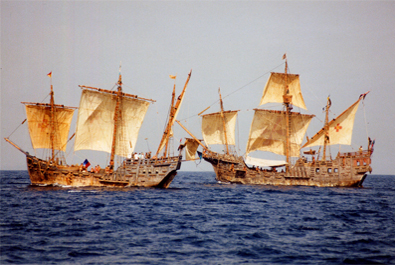
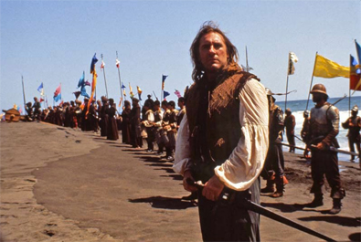
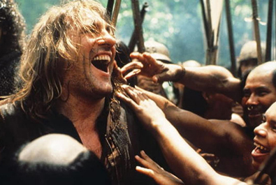
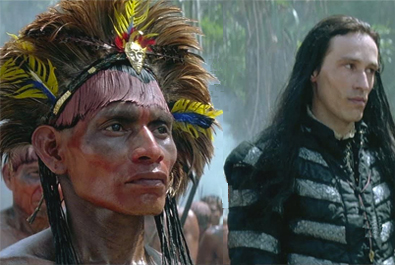
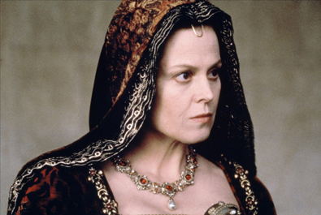
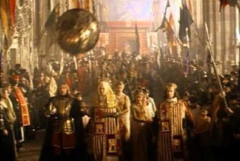

Alain Goldman
Ridley Scott
Roselyne Bosch


Christopher Columbus
Gabriel Sánchez
Antonio de Marchena
Adrián de Moxica
Martín Alonso Pinzón
Luis de Santángel
de Arojaz
Younger Ferdinand Columbus
Older Ferdinand Columbus
Diego Columbus
Brother Buyl
Bartholomew Columbus, brother of Christopher
Alonso de Bolaños
King Ferdinand V
Dueña
Pinzón's Wife


The idea for the film began in 1987 when French journalist Roselyne Bosch was researching an article for the upcoming 500th anniversary of Columbus' arrival in the Americas. While examining copies of Columbus' letters to Queen Isabel and King Ferdinand, Bosch realized there was interesting material for a screenplay and began additional research on the events surrounding the voyages such as biographies on Columbus and original documents and translations.
Scott and his production team scouted in Spain for more than four months before choosing locations in such historic cities as Caceres, Trujillo, Seville and Salamanca. The filmmakers were given permission by Spanish authorities to film in world-famous monuments like the Alcazar and Casa de Pilatos in Seville and the Old Cathedral of Salamanca. In Spain, 350 carpenters, labourers and painters worked on the film. Era-appropriate props were specially constructed and later-era replicas were secured from antique dealers and prop houses in Madrid, Seville, Rome and London.
For settings for the New World, Cuba, Mexico, the Dominican Republic and Colombia were considered, but Costa Rica was chosen. According to Scott, "Costa Rica has been called 'the Switzerland of the Indies.' It's balanced politically, has no army, and has 95% literacy. Apart from that I needed to have islands, beaches, mainlands, and jungle, and I found it all in Costa Rica." While filming in Costa Rica, the production was based in Jacó, a small town on the Pacific coast. In addition to heavy humidity and 100+ °F (37.8+ °C) temperatures, the production crew had to deal with alligators, scorpions and poisonous snakes. A snake handler was on hand to help keep them away. Ten major sets were built, including three Indian villages, a gold mine, and Columbus's city of Isabel, a twenty acre set which included a cathedral, city hall, an army barracks, a jail, and a two-story governor's mansion for Columbus. Scenes in the New World were often enhanced by atmospheric effects such as mist, smoke, rain and fire. 170 indigenous people of Costa Rica comprising four tribes, the Bribri, Maleku, Boruca and Cabecar, were cast as the natives that Columbus encountered.
Costume Designer Charles Knode created more than 3,000 costumes. According to Knode, "What we always tried to do was have clothing, not costumes. We tried to make everything look lived-in." Eight outfits were created for Queen Isabel, including a gold brocade gown with a 30-foot printed velvet train and gem-encrusted headdress.
Square Sail, a British-based company, refashioned the Santa Maria and Pinta replicas from the hull up from two early 20th century era brigantines. The Nina was constructed in Brazil specifically for the film for the film's 500th anniversary by the Columbus Foundation. The Santa Maria and Nina sailed from Britain to Costa Rica, arriving 10 December 1991 where they joined the Nina.

